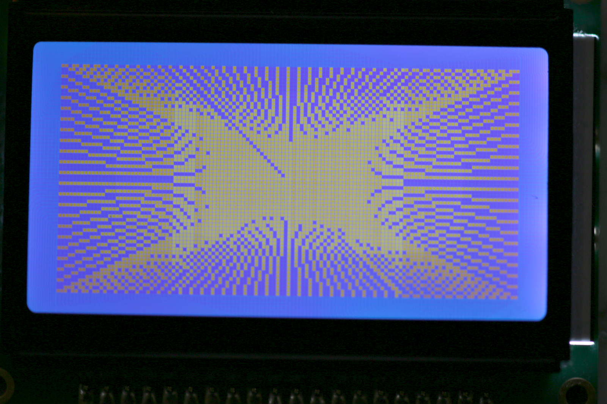

プログラミング ～その１～
最初に
とりあえず簡単なプログラムを組んでみよう。
動画（⇒）のように、１～10までの数字をプリントするプログラムをTeraTermから
入力して、実行してみましょう。
このように、TeraTermからインタプリタとして使えます。
printの出力はTeraTerm上に表示されます。
グラフィックを使ってみよう
次はグラフィックを使ってみよう。 
TeraTermでラインを描画するプログラムを入力します。
実行すると下記のような結果が得られると思います。
毎回手入力するのは、面倒なので、listコマンドでプログラムを表示して、テキストエディタにコピペして保存しておこう。
保存したプログラムの実行
先ほど保存したプログラムの先頭に画面を消去する行を追加して、実行してみる。（⇒）
動画では、以下の４つを実施している。
①テキストエディタで先ほど保存したline.basを開く。
②先頭にclsを追加して、ファイルを保存
③TeraTermのファイルを送信で、line.basを送信
④runで実行
このマイコンでは、このようにテキストエディタで編集したBASICプログラムを編集・保存してプログラムを作っていく。